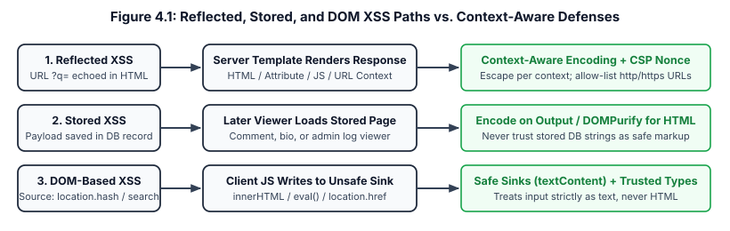

Chapter 4: Cross-Site Scripting and Browser Execution Contexts
Learning Objectives
By the end of this chapter, you should be able to:
- Distinguish reflected, stored, and DOM-based Cross-Site Scripting (XSS).
- Explain how browser parsing contexts (HTML body, HTML attribute, JavaScript, CSS, URL) change what constitutes dangerous characters.
- Apply context-aware output encoding and safe DOM APIs (
textContentvs.innerHTML). - Configure Content Security Policy (CSP) and
HttpOnlycookies as defense-in-depth layers, and understand their limits.
4.1 Why XSS Happens
Cross-Site Scripting (MITRE CWE-79) occurs when an application includes untrusted data in a web page without proper validation or context-aware output encoding, allowing an attacker to execute arbitrary JavaScript in another user's browser session.
Because the injected script runs inside the victim's browser under the application's origin, it inherits the victim's privileges for that origin. The browser has no built-in way to distinguish a legitimate <script> tag written by the developer from an injected tag echoed out of a search parameter or database comment once both are serialized into the same HTML response.
As a result, an attacker who achieves XSS can read sensitive DOM contents (such as CSRF tokens or account balances), issue authenticated fetch() requests as the victim, steal bearer tokens from localStorage, or perform administrative actions automatically when a privileged user views an infected page.
4.2 The Three Types of XSS

Figure 4.1 contrasts how untrusted input reaches execution across all three XSS classes and where the corresponding defense lives:
| Type | Where Payload Lives | How It Triggers | Typical Example |
|---|---|---|---|
| Reflected | In the immediate HTTP request (query string, path, header) | Victim clicks a crafted link; server echoes input back into the HTML response | Search page: /search?q=<script>... |
| Stored (Persistent) | Saved in a server database, comment, profile, or log viewer | Any user (or admin) who later views that stored record executes the script | Forum comment, user bio, support ticket |
| DOM-Based | Never needs to touch server-side rendering; stays in client-side URL/storage | Client-side JavaScript reads an untrusted source (e.g., location.hash) and writes it to an unsafe sink (e.g., innerHTML) | SPA routing or hash-based greeting banner |
Sources and Sinks in DOM XSS
In DOM-based XSS, look for untrusted sources flowing into dangerous sinks:
- Common Sources:
location.search,location.hash,document.referrer,window.name,postMessageevent data. - Dangerous Sinks:
element.innerHTML,document.write(),eval(),setTimeout(string),location.href = untrustedUrl(which executesjavascript:URIs).
Replacing element.innerHTML = name with element.textContent = name neutralizes HTML injection because the browser treats textContent strictly as plain text, not markup.
4.3 Context-Aware Output Encoding
HTML entity encoding (< to <, > to >, & to &, " to ", ' to ') works when inserting untrusted text into the HTML body or a quoted HTML attribute. However, HTML encoding alone is not enough in other browser contexts:
- Unquoted HTML Attribute:
<input value=USER_INPUT>— spaces or event handlers likeonfocus=alert(1)can break out without using<or>. Always quote attributes. - JavaScript Context:
<script>const name = "USER_INPUT";</script>— HTML encoding does not stop"; alert(1); //inside a<script>block, because the JS parser runs after HTML parsing. Pass data via JSON-encoded<script type="application/json">blocks ordata-*attributes read bydataset. - URL Context:
<a href="USER_INPUT">— HTML-encodingjavascript:alert(1)still leaves a validjavascript:URI that executes when clicked. Always validate the URL scheme against an allow-list (http:,https:, or relative paths).
Modern templating engines (React JSX, Angular, Jinja2 with autoescape, Go html/template) apply context-aware escaping by default, but escape hatches such as dangerouslySetInnerHTML, [innerHTML], |safe, or v-html bypass that protection.
HTML Sanitizers and Mutation XSS (mXSS)
When an application intentionally accepts rich HTML (such as a blog editor or wiki), output encoding alone would display raw <b> tags as text. Instead, teams use an allow-list HTML sanitizer such as DOMPurify that parses HTML into a DOM tree, strips dangerous tags (<script>, <iframe>, <svg>) and event attributes (onload, onerror), and re-serializes safe markup.
Never write regex-based HTML filters (for example, stripping <script> with replace()). Browsers tolerate malformed HTML and automatically repair broken nesting—a behavior exploited by Mutation XSS (mXSS), where benign-looking input mutates into an executable <script> or onerror handler when the browser's HTML parser re-parses it. Because HTML, SVG, MathML, and CSS parsers follow distinct tokenization rules, parser differentials across browser contexts are a recurring source of client-side bypasses. Modern browsers also offer Trusted Types (Content-Security-Policy: require-trusted-types-for 'script') to restrict dangerous DOM sinks like innerHTML so only policy-approved objects can reach them.
4.4 Defense in Depth: HttpOnly and Content Security Policy
HttpOnly Cookies
Setting HttpOnly on a session cookie prevents document.cookie from reading it via JavaScript. While this stops simple cookie-theft payloads, XSS can still force the browser to make authenticated requests using fetch() (because the browser attaches HttpOnly cookies automatically). HttpOnly limits impact; it does not fix XSS.
Content Security Policy (CSP)
A Content Security Policy header tells the browser which script sources are allowed to execute:
Content-Security-Policy: default-src 'self'; script-src 'self' 'nonce-r4nd0mV4lue'; object-src 'none'; base-uri 'self';Key rules for an effective CSP:
- Avoid
'unsafe-inline'and'unsafe-eval'inscript-src, as they allow injected inline scripts to run. - Use cryptographic nonces (regenerated on every response) or hashes for legitimate inline scripts.
- Restrict
object-src 'none'andbase-uri 'self'to prevent plugin abuse and<base>tag hijacking.
CSP is a strong second layer of defense, not a replacement for output encoding.
Key Takeaways
- Reflected, stored, and DOM-based XSS differ in how payloads reach the browser but share the same root cause: unencoded or unsafe context insertion.
- Output encoding must match the exact browser context (HTML body, quoted attribute, JavaScript, or URL scheme).
- Content Security Policy (CSP) with nonces,
HttpOnlycookies, and Trusted Types provide defense in depth.
Applied Exercise
Examine a client-side script that reads location.hash into element.innerHTML and a template rendering <a href="USER_URL">. Propose the exact safe DOM API and URL-scheme check for both.
Review Questions
- Why does
HttpOnlyon a session cookie not completely neutralize an XSS vulnerability? - Give an example of an untrusted DOM source and a dangerous DOM sink, and show the safe alternative.
- Why does HTML entity encoding fail to protect
<a href="USER_INPUT">againstjavascript:URLs? - What makes
'unsafe-inline'weaken a Content Security Policy against XSS?
References
- MITRE CWE-79 (CWE Top 25) — https://cwe.mitre.org/top25/archive/2025/2025_cwe_top25.html
- OWASP Cheat Sheet Series: Cross Site Scripting Prevention — https://cheatsheetseries.owasp.org/cheatsheets/Cross_Site_Scripting_Prevention_Cheat_Sheet.html
- MDN Web Docs: Content Security Policy (CSP) implementation — https://developer.mozilla.org/en-US/docs/Web/Security/Practical_implementation_guides/CSP
- OWASP WSTG v4.2: Testing for Cross Site Scripting — https://wstg.owasp.org/v4.2/4-Web_Application_Security_Testing/07-Input_Validation_Testing/01-Testing_for_Reflected_Cross_Site_Scripting